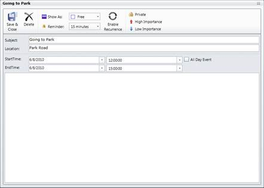

· The AllowAddNew property lets you add appointments to the Schedule control. The Default value for this property is set to true.
· You can add appointments directly to the Schedule control. The following code example illustrates how to do this.
|
[XAML] <schedule:Schedule.Appointments> <schedule:ScheduleAppointment StartTime="6/18/2010 08:00:00 AM" EndTime="6/18/2010 09:00:00 AM" Subject="Meet the doc" Location="Hutchison road" AllDay="False"/> <schedule:ScheduleAppointment StartTime="6/19/2010 11:00:00 AM" EndTime="6/19/2010 12:30:00 PM" Subject="Going to Park" Location="Park road" AllDay="False"/> </schedule:Schedule.Appointments> |
· You can also add the appointments dynamically using the appointment window. Double-click the schedule control and the appointment window opens. In the Appointment window, enter the details for the appointment. Then click Save in the Appointment window. The following figure shows the appointment window.

Figure 5: Adding Appointment using Appointment Window